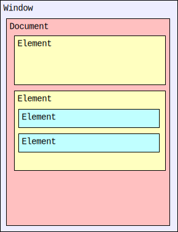

The HTML DOM API
The HTML DOM API is made up of the interfaces that define the functionality of each of the elements in HTML, as well as any supporting types and interfaces they rely upon.
The functional areas included in the HTML DOM API include:
- Access to and control of HTML elements via the DOM.
- Access to and manipulation of form data.
- Interacting with the contents of 2D images and the context of an HTML
<canvas>, for example to draw on top of them. - Management of media connected to the HTML media elements (
<audio>and<video>). - Dragging and dropping of content on webpages.
- Access to the browser navigation history
- Supporting and connective interfaces for other APIs such as Web Components, Web Storage, Web Workers, WebSocket, and Server-sent events.
HTML DOM concepts and usage
In this article, we'll focus on the parts of the HTML DOM that involve engaging with HTML elements. Discussion of other areas, such as Drag and Drop, WebSockets, Web Storage, etc. can be found in the documentation for those APIs.
Structure of an HTML document
The Document Object Model (DOM) is an architecture that describes the structure of a document; each document is represented by an instance of the interface Document. A document, in turn, consists of a hierarchical tree of nodes, in which a node is a fundamental record representing a single object within the document (such as an element or text node).
Nodes may be strictly organizational, providing a means for grouping other nodes together or for providing a point at which a hierarchy can be constructed; other nodes may represent visible components of a document. Each node is based on the Node interface, which provides properties for getting information about the node as well as methods for creating, deleting, and organizing nodes within the DOM.
Nodes don't have any concept of including the content that is actually displayed in the document. They're empty vessels. The fundamental notion of a node that can represent visual content is introduced by the Element interface. An Element object instance represents a single element in a document created using either HTML or an XML vocabulary such as SVG.
For example, consider a document with two elements, one of which has two more elements nested inside it:

While the Document interface is defined as part of the DOM specification, the HTML specification significantly enhances it to add information specific to using the DOM in the context of a web browser, as well as to using it to represent HTML documents specifically.
Among the things added to Document by the HTML standard are:
- Support for accessing various information provided by the HTTP headers when loading the page, such as the location from which the document was loaded, cookies, modification date, referring site, and so forth.
- Access to lists of elements in the document's
<head>block and body, as well as lists of the images, links, scripts, etc. contained in the document. - Support for interacting with the user by examining focus and by executing commands on editable content.
- Event handlers for document events defined by the HTML standard to allow access to mouse and keyboard events, drag and drop, media control, and more.
- Event handlers for events that can be delivered to both elements and documents; these presently include only copy, cut, and paste actions.
HTML element interfaces
The Element interface has been further adapted to represent HTML elements specifically by introducing the HTMLElement interface, which all more specific HTML element classes inherit from. This expands the Element class to add HTML-specific general features to the element nodes. Properties added by HTMLElement include for example hidden and innerText. HTMLElement also adds all the global event handlers.
An HTML document is a DOM tree in which each of the nodes is an HTML element, represented by the HTMLElement interface. The HTMLElement class, in turn, implements Node, so every element is also a node (but not the other way around). This way, the structural features implemented by the Node interface are also available to HTML elements, allowing them to be nested within each other, created and deleted, moved around, and so forth.
The HTMLElement interface is generic, however, providing only the functionality common to all HTML elements such as the element's ID, its coordinates, the HTML making up the element, information about scroll position, and so forth.
In order to expand upon the functionality of the core HTMLElement interface to provide the features needed by a specific element, the HTMLElement class is subclassed to add the needed properties and methods. For example, the <canvas> element is represented by an object of type HTMLCanvasElement. HTMLCanvasElement augments the HTMLElement type by adding properties such as height and methods like getContext() to provide canvas-specific features.
The overall inheritance for HTML element classes looks like this:

As such, an element inherits the properties and methods of all of its ancestors. For example, consider a <a> element, which is represented in the DOM by an object of type HTMLAnchorElement. The element, then, includes the anchor-specific properties and methods described in that class's documentation, but also those defined by HTMLElement and Element, as well as from Node and, finally, EventTarget.
Each level defines a key aspect of the utility of the element. From Node, the element inherits concepts surrounding the ability for the element to be contained by another element, and to contain other elements itself. Of special importance is what is gained by inheriting from EventTarget: the ability to receive and handle events such as mouse clicks, play and pause events, and so forth.
There are elements that share commonalities and thus have an additional intermediary type. For example, the <audio> and <video> elements both present audiovisual media. The corresponding types, HTMLAudioElement and HTMLVideoElement, are both based upon the common type HTMLMediaElement, which in turn is based upon HTMLElement and so forth. HTMLMediaElement defines the methods and properties held in common between audio and video elements.
These element-specific interfaces make up the majority of the HTML DOM API, and are the focus of this article. To learn more about the actual structure of the DOM, see Introduction to the DOM.
HTML DOM target audience
The features exposed by the HTML DOM are among the most commonly-used APIs in the web developer's arsenal. All but the most simple web applications will use some features of the HTML DOM.
HTML DOM API interfaces
The majority of the interfaces that comprise the HTML DOM API map almost one-to-one to individual HTML elements, or to a small group of elements with similar functionality. In addition, the HTML DOM API includes a few interfaces and types to support the HTML element interfaces.
HTML element interfaces
These interfaces represent specific HTML elements (or sets of related elements which have the same properties and methods associated with them).
HTMLAnchorElementHTMLAreaElementHTMLAudioElementHTMLBaseElementHTMLBodyElementHTMLBRElementHTMLButtonElementHTMLCanvasElementHTMLDataElementHTMLDataListElementHTMLDetailsElementHTMLDialogElementHTMLDirectoryElementHTMLDivElementHTMLDListElementHTMLElementHTMLEmbedElementHTMLFieldSetElementHTMLFormElementHTMLHRElementHTMLHeadElementHTMLHeadingElementHTMLHtmlElementHTMLIFrameElementHTMLImageElementHTMLInputElementHTMLLabelElementHTMLLegendElementHTMLLIElementHTMLLinkElementHTMLMapElementHTMLMediaElementHTMLMenuElementHTMLMetaElementHTMLMeterElementHTMLModElementHTMLObjectElementHTMLOListElementHTMLOptGroupElementHTMLOptionElementHTMLOutputElementHTMLParagraphElementHTMLParamElementHTMLPictureElementHTMLPreElementHTMLProgressElementHTMLQuoteElementHTMLScriptElementHTMLSelectElementHTMLSlotElementHTMLSourceElementHTMLSpanElementHTMLStyleElementHTMLTableCaptionElementHTMLTableCellElementHTMLTableColElementHTMLTableElementHTMLTableRowElementHTMLTableSectionElementHTMLTemplateElementHTMLTextAreaElementHTMLTimeElementHTMLTitleElementHTMLTrackElementHTMLUListElementHTMLUnknownElementHTMLVideoElement
Deprecated HTML Element Interfaces
Obsolete HTML Element Interfaces
Web app and browser integration interfaces
These interfaces offer access to the browser window and document that contain the HTML, as well as to the browser's state, available plugins (if any), and various configuration options.
Deprecated web app and browser integration interfaces
Obsolete web app and browser integration interfaces
Form support interfaces
These interfaces provide structure and functionality required by the elements used to create and manage forms, including the <form> and <input> elements.
Canvas and image interfaces
These interfaces represent objects used by the Canvas API as well as the <img> element and <picture> elements.
Media interfaces
The media interfaces provide HTML access to the contents of the media elements: <audio> and <video>.
Drag and drop interfaces
These interfaces are used by the HTML_Drag_and_Drop_API to represent individual draggable (or dragged) items, groups of dragged or draggable items, and to handle the drag and drop process.
Page history interfaces
The History API interfaces let you access information about the browser's history, as well as to shift the browser's current tab forward and backward through that history.
Web Components interfaces
These interfaces are used by the Web Components API to create and manage the available custom elements.
Miscellaneous and supporting interfaces
These supporting object types are used in a variety of ways in the HTML DOM API. In addition, PromiseRejectionEvent represents the event delivered when a JavaScript Promise is rejected.
Interfaces belonging to other APIs
Several interfaces are technically defined in the HTML specification while actually being part of other APIs.
Web storage interfaces
The Web_Storage_API provides the ability for web sites to store data either temporarily or permanently on the user's device for later re-use.
Web Workers interfaces
These interfaces are used by the Web_Workers_API both to establish the ability for workers to interact with an app and its content, but also to support messaging between windows or apps.
BroadcastChannelDedicatedWorkerGlobalScopeMessageChannelMessageEventMessagePortSharedWorkerSharedWorkerGlobalScopeWorkerWorkerGlobalScopeWorkerLocationWorkerNavigator
WebSocket interfaces
These interfaces, defined by the HTML specification, are used by the WebSockets_API.
Server-sent events interfaces
The EventSource interface represents the source which sent or is sending server-sent events.
Examples
In this example, an <input> element's input event is monitored in order to update the state of a form's "submit" button based on whether or not a given field currently has a value.
JavaScript
const nameField = document.getElementById("userName");
const sendButton = document.getElementById("sendButton")
sendButton.disabled = true;
// [note: this is disabled since it causes this article to always load with this example focused and scrolled into view]
//nameField.focus();
nameField.addEventListener("input", event => {
const elem = event.target;
const valid = elem.value.length != 0;
if (valid && sendButton.disabled) {
sendButton.disabled = false;
} else if (!valid && !sendButton.disabled) {
sendButton.disabled = true;
}
});
This code uses the Document interface's getElementById() method to get the DOM object representing the <input> elements whose IDs are userName and sendButton. With these, we can access the properties and methods that provide information about and grant control over these elements.
The HTMLInputElement object for the "Send" button's disabled property is set to true, which disables the "Send" button so it can't be clicked. In addition, the user name input field is made the active focus by calling the focus() method it inherits from HTMLElement.
Then addEventListener() is called to add a handler for the input event to the user name input. This code looks at the length of the current value of the input; if it's zero, then the "Send" button is disabled if it's not already disabled. Otherwise, the code ensures that the button is enabled.
With this in place, the "Send" button is always enabled whenever the user name input field has a value, and disabled when it's empty.
HTML
The HTML for the form looks like this:
<p>Please provide the information below. Items marked with "*" are required.</p>
<form action="" method="get">
<p>
<label for="userName" required>Your name:</label>
<input type="text" id="userName"> (*)
</p>
<p>
<label for="email">Email:</label>
<input type="email" id="userEmail">
</p>
<input type="submit" value="Send" id="sendButton">
</form>
Result
Specifications
| Specification | Status | Comment |
|---|---|---|
| HTML Living Standard | Living Standard | WHATWG HTML Specification |
| HTML5 | Recommendation | No change from Document Object Model (DOM) Level 2 HTML Specification |
| Document Object Model (DOM) Level 2 HTML Specification | Obsolete | No change from Document Object Model (DOM) Level 1 Specification. |
| Document Object Model (DOM) Level 1 Specification | Obsolete | Initial definition. |
Browser compatibility
| desktop | mobile | |||||||||||
|---|---|---|---|---|---|---|---|---|---|---|---|---|
HTMLElement | ChromeFull support1 | EdgeFull support12 | FirefoxFull support1 | Internet ExplorerFull support5.5 | OperaFull support8 | SafariFull support1.3 | WebView AndroidFull support1 | Chrome AndroidFull support18 | Firefox for AndroidFull support4 | Opera AndroidFull support10.1 | Safari on iOSFull support1 | Samsung InternetFull support1.0 |
accessKey | ChromeFull support17 | EdgeFull support12 | FirefoxFull support5 | Internet ExplorerFull support5.5 | OperaFull support12.1 | SafariFull support6 | WebView AndroidFull support4.4 | Chrome AndroidFull support18 | Firefox for AndroidFull support5 | Opera AndroidFull support12.1 | Safari on iOSFull support6 | Samsung InternetFull support1.0 |
accessKeyLabel | ChromeNo supportNo | EdgeNo supportNo | FirefoxFull support8 | Internet ExplorerNo supportNo | OperaNo supportNo | SafariFull support14 | WebView AndroidNo supportNo | Chrome AndroidNo supportNo | Firefox for AndroidFull support8 | Opera AndroidNo supportNo | Safari on iOSFull support14 | Samsung InternetNo supportNo |
animationcancel event | ChromePartial support83 | EdgePartial support83 | FirefoxFull support54 | Internet ExplorerNo supportNo | OperaPartial support69 | SafariFull support13.1 | WebView AndroidPartial support83 | Chrome AndroidPartial support83 | Firefox for AndroidFull support54 | Opera AndroidPartial support59 | Safari on iOSFull support13.4 | Samsung InternetPartial support13.0 |
animationend event | ChromeFull support43 | EdgeFull support12 | FirefoxFull support51 | Internet ExplorerFull support10 | OperaFull support30 | SafariFull support9 | WebView AndroidFull support43 | Chrome AndroidFull support43 | Firefox for AndroidFull support51 | Opera AndroidFull support30 | Safari on iOSFull support9 | Samsung InternetFull support4.0 |
animationiteration event | ChromeFull support43 | EdgeFull support12 | FirefoxFull support51 | Internet ExplorerFull support10 | OperaFull support30 | SafariFull support9 | WebView AndroidFull support43 | Chrome AndroidFull support43 | Firefox for AndroidFull support51 | Opera AndroidFull support30 | Safari on iOSFull support9 | Samsung InternetFull support4.0 |
animationstart event | ChromeFull support43 | EdgeFull support12 | FirefoxFull support51 | Internet ExplorerFull support10 | OperaFull support30 | SafariFull support9 | WebView AndroidFull support43 | Chrome AndroidFull support43 | Firefox for AndroidFull support51 | Opera AndroidFull support30 | Safari on iOSFull support9 | Samsung InternetFull support4.0 |
attachInternals | ChromeFull support77 | EdgeFull support79 | FirefoxFull support93 | Internet ExplorerNo supportNo | OperaFull support64 | SafariNo supportNo | WebView AndroidFull support77 | Chrome AndroidFull support77 | Firefox for AndroidFull support93 | Opera AndroidFull support55 | Safari on iOSNo supportNo | Samsung InternetFull support12.0 |
autocapitalize | ChromeFull support66 | EdgeFull support79 | FirefoxFull support83 | Internet ExplorerNo supportNo | OperaFull support53 | SafariNo supportNo | WebView AndroidFull support66 | Chrome AndroidFull support66 | Firefox for AndroidFull support83 | Opera AndroidFull support47 | Safari on iOSFull support10.3 | Samsung InternetFull support9.0 |
autofocus | ChromeFull support79 | EdgeFull support79 | FirefoxPartial support1 | Internet ExplorerPartial support10 | OperaFull support66 | SafariPartial support4 | WebView AndroidFull support79 | Chrome AndroidFull support79 | Firefox for AndroidPartial support4 | Opera AndroidFull support57 | Safari on iOSPartial support3.2 | Samsung InternetFull support12.0 |
beforeinput event | ChromeFull support60 | EdgeFull support79 | FirefoxFull support87 | Internet ExplorerNo supportNo | OperaFull support47 | SafariFull support10.1 | WebView AndroidFull support60 | Chrome AndroidFull support60 | Firefox for AndroidFull support87 | Opera AndroidFull support44 | Safari on iOSFull support10.3 | Samsung InternetFull support8.0 |
blur | ChromeFull support1 | EdgeFull support12 | FirefoxFull support1.5 | Internet ExplorerFull support5.5 | OperaFull support8 | SafariFull support3 | WebView AndroidFull support4.4 | Chrome AndroidFull support18 | Firefox for AndroidFull support4 | Opera AndroidFull support10.1 | Safari on iOSFull support1 | Samsung InternetFull support1.0 |
| click() | ChromeFull support9 | EdgeFull support12 | FirefoxFull support3 | Internet ExplorerFull support5.5 | OperaFull support10.5 | SafariFull support6 | WebView AndroidFull support4.4 | Chrome AndroidFull support18 | Firefox for AndroidFull support4 | Opera AndroidFull support11 | Safari on iOSFull support6 | Samsung InternetFull support1.0 |
contentEditable | ChromeFull support1 | EdgeFull support12 | FirefoxFull support3 | Internet ExplorerFull support5.5 | OperaFull support9 | SafariFull support3 | WebView AndroidFull support4.4 | Chrome AndroidFull support18 | Firefox for AndroidFull support4 | Opera AndroidFull support10.1 | Safari on iOSFull support1 | Samsung InternetFull support1.0 |
contextMenu | ChromeNo support45 – 61 | EdgeNo supportNo | FirefoxFull support85 | Internet ExplorerNo supportNo | OperaNo supportNo | SafariNo supportNo | WebView AndroidNo support45 – 61 | Chrome AndroidNo support45 – 61 | Firefox for AndroidFull support85 | Opera AndroidNo supportNo | Safari on iOSNo supportNo | Samsung InternetNo support5.0 – 8.0 |
dataset | ChromeFull support8 | EdgeFull support12 | FirefoxFull support6 | Internet ExplorerFull support11 | OperaFull support11 | SafariFull support5.1 | WebView AndroidFull support3 | Chrome AndroidFull support18 | Firefox for AndroidFull support6 | Opera AndroidFull support11 | Safari on iOSFull support5 | Samsung InternetFull support1.0 |
dir | ChromeFull support1 | EdgeFull support12 | FirefoxFull support1 | Internet ExplorerFull support5.5 | OperaFull support12.1 | SafariFull support3 | WebView AndroidFull support4.4 | Chrome AndroidFull support18 | Firefox for AndroidFull support4 | Opera AndroidFull support12.1 | Safari on iOSFull support1 | Samsung InternetFull support1.0 |
draggable | ChromeFull support3 | EdgeFull support12 | FirefoxFull support2 | Internet ExplorerFull support10 | OperaFull support12 | SafariFull support5 | WebView AndroidFull support4.4 | Chrome AndroidFull support18 | Firefox for AndroidFull support4 | Opera AndroidFull support12 | Safari on iOSFull support4 | Samsung InternetFull support1.0 |
enterKeyHint | ChromeFull support77 | EdgeFull support79 | FirefoxFull support94 | Internet ExplorerNo supportNo | OperaFull support64 | SafariFull support13.1 | WebView AndroidFull support77 | Chrome AndroidFull support77 | Firefox for AndroidFull support94 | Opera AndroidFull support55 | Safari on iOSFull support13.4 | Samsung InternetFull support12.0 |
focus | ChromeFull support1 | EdgeFull support12 | FirefoxFull support1.5 | Internet ExplorerFull support5.5 | OperaFull support8 | SafariFull support3 | WebView AndroidFull support4.4 | Chrome AndroidFull support18 | Firefox for AndroidFull support4 | Opera AndroidFull support10.1 | Safari on iOSFull support1 | Samsung InternetFull support1.0 |
options.preventScroll parameter | ChromeFull support64 | EdgeFull support17 | FirefoxFull support68 | Internet ExplorerNo supportNo | OperaFull support51 | SafariNo supportNo | WebView AndroidFull support64 | Chrome AndroidFull support64 | Firefox for AndroidFull support68 | Opera AndroidFull support47 | Safari on iOSNo supportNo | Samsung InternetFull support9.0 |
gotpointercapture event | ChromeFull support57 | EdgeFull support17 | FirefoxFull support59 | Internet ExplorerNo supportNo | OperaFull support44 | SafariFull support13 | WebView AndroidFull support57 | Chrome AndroidFull support57 | Firefox for AndroidFull support79 | Opera AndroidFull support43 | Safari on iOSFull support13 | Samsung InternetFull support7.0 |
hidden | ChromeFull support6 | EdgeFull support12 | FirefoxFull support1 | Internet ExplorerFull support11 | OperaFull support11.6 | SafariFull support5.1 | WebView AndroidFull support3 | Chrome AndroidFull support18 | Firefox for AndroidFull support4 | Opera AndroidFull support12 | Safari on iOSFull support5 | Samsung InternetFull support1.0 |
inert | ChromeFull support60 | EdgeFull support79 | FirefoxFull support81 | Internet ExplorerNo supportNo | OperaFull support47 | SafariPreview browser supportTP | WebView AndroidNo supportNo | Chrome AndroidFull support60 | Firefox for AndroidFull support81 | Opera AndroidFull support44 | Safari on iOSNo supportNo | Samsung InternetNo supportNo |
innerText | ChromeFull support1 | EdgeFull support12 | FirefoxFull support45 | Internet ExplorerFull support5.5 | OperaFull support9.6 | SafariFull support3 | WebView AndroidFull support4.4 | Chrome AndroidFull support18 | Firefox for AndroidFull support45 | Opera AndroidFull support10.1 | Safari on iOSFull support1 | Samsung InternetFull support1.0 |
input event | ChromeFull support1 | EdgeFull support79 | FirefoxFull support6 | Internet ExplorerPartial support9 | OperaFull support11.6 | SafariFull support3.1 | WebView AndroidFull support1 | Chrome AndroidFull support18 | Firefox for AndroidFull support6 | Opera AndroidFull support12 | Safari on iOSFull support2 | Samsung InternetFull support1.0 |
inputMode | ChromeFull support66 | EdgeFull support79 | FirefoxFull support95 | Internet ExplorerNo supportNo | OperaFull support53 | SafariFull support12.1 | WebView AndroidFull support66 | Chrome AndroidFull support66 | Firefox for AndroidFull support79 | Opera AndroidFull support47 | Safari on iOSFull support12.2 | Samsung InternetFull support9.0 |
isContentEditable | ChromeFull support1 | EdgeFull support12 | FirefoxFull support4 | Internet ExplorerFull support5.5 | OperaFull support12.1 | SafariFull support3 | WebView AndroidFull support4.4 | Chrome AndroidFull support18 | Firefox for AndroidFull support4 | Opera AndroidFull support12.1 | Safari on iOSFull support1 | Samsung InternetFull support1.0 |
itemId | ChromeNo support17 – 28 | EdgeNo supportNo | FirefoxNo support16 – 49 | Internet ExplorerNo supportNo | OperaNo support11 – 15 | SafariNo supportNo | WebView AndroidNo supportNo | Chrome AndroidNo support18 – 28 | Firefox for AndroidNo support16 – 49 | Opera AndroidNo support11 – 14 | Safari on iOSNo supportNo | Samsung InternetNo support1.0 – 1.5 |
itemProp | ChromeNo support17 – 28 | EdgeNo supportNo | FirefoxNo support16 – 49 | Internet ExplorerNo supportNo | OperaNo support11 – 15 | SafariNo supportNo | WebView AndroidNo supportNo | Chrome AndroidNo support18 – 28 | Firefox for AndroidNo support16 – 49 | Opera AndroidNo support11 – 14 | Safari on iOSNo supportNo | Samsung InternetNo support1.0 – 1.5 |
itemRef | ChromeNo support17 – 28 | EdgeNo supportNo | FirefoxNo support16 – 49 | Internet ExplorerNo supportNo | OperaNo support11 – 15 | SafariNo supportNo | WebView AndroidNo supportNo | Chrome AndroidNo support18 – 28 | Firefox for AndroidNo support16 – 49 | Opera AndroidNo support11 – 14 | Safari on iOSNo supportNo | Samsung InternetNo support1.0 – 1.5 |
itemScope | ChromeNo support17 – 28 | EdgeNo supportNo | FirefoxNo support16 – 49 | Internet ExplorerNo supportNo | OperaNo support11 – 15 | SafariNo supportNo | WebView AndroidNo supportNo | Chrome AndroidNo support18 – 28 | Firefox for AndroidNo support16 – 49 | Opera AndroidNo support11 – 14 | Safari on iOSNo supportNo | Samsung InternetNo support1.0 – 1.5 |
itemType | ChromeNo support17 – 28 | EdgeNo supportNo | FirefoxNo support16 – 49 | Internet ExplorerNo supportNo | OperaNo support11 – 15 | SafariNo supportNo | WebView AndroidNo supportNo | Chrome AndroidNo support18 – 28 | Firefox for AndroidNo support16 – 49 | Opera AndroidNo support11 – 14 | Safari on iOSNo supportNo | Samsung InternetNo support1.0 – 1.5 |
itemValue | ChromeNo support17 – 28 | EdgeNo supportNo | FirefoxNo support16 – 49 | Internet ExplorerNo supportNo | OperaNo support11 – 15 | SafariNo supportNo | WebView AndroidNo supportNo | Chrome AndroidNo support18 – 28 | Firefox for AndroidNo support16 – 49 | Opera AndroidNo support11 – 14 | Safari on iOSNo supportNo | Samsung InternetNo support1.0 – 1.5 |
lang | ChromeFull support1 | EdgeFull support12 | FirefoxFull support1 | Internet ExplorerFull support5.5 | OperaFull support12.1 | SafariFull support3 | WebView AndroidFull support4.4 | Chrome AndroidFull support18 | Firefox for AndroidFull support4 | Opera AndroidFull support12.1 | Safari on iOSFull support1 | Samsung InternetFull support1.0 |
lostpointercapture event | ChromeFull support57 | EdgeFull support17 | FirefoxFull support59 | Internet ExplorerNo supportNo | OperaFull support44 | SafariFull support13 | WebView AndroidFull support57 | Chrome AndroidFull support57 | Firefox for AndroidFull support79 | Opera AndroidFull support43 | Safari on iOSFull support13 | Samsung InternetFull support7.0 |
nonce | ChromeFull support61 | EdgeFull support79 | FirefoxFull support75 | Internet ExplorerNo supportNo | OperaFull support48 | SafariPartial support10 | WebView AndroidFull support61 | Chrome AndroidFull support61 | Firefox for AndroidFull support79 | Opera AndroidFull support45 | Safari on iOSPartial support10 | Samsung InternetFull support8.0 |
offsetHeight | ChromeFull support1 | EdgeFull support12 | FirefoxFull support1 | Internet ExplorerFull support5.5 | OperaFull support8 | SafariFull support3 | WebView AndroidFull support1 | Chrome AndroidFull support18 | Firefox for AndroidFull support4 | Opera AndroidFull support10.1 | Safari on iOSFull support1 | Samsung InternetFull support1.0 |
offsetLeft | ChromeFull support1 | EdgeFull support12 | FirefoxFull support1 | Internet ExplorerFull support5.5 | OperaFull support8 | SafariFull support3 | WebView AndroidFull support1 | Chrome AndroidFull support18 | Firefox for AndroidFull support4 | Opera AndroidFull support10.1 | Safari on iOSFull support1 | Samsung InternetFull support1.0 |
offsetParent | ChromeFull support1 | EdgeFull support12 | FirefoxFull support1 | Internet ExplorerFull support5.5 | OperaFull support8 | SafariFull support3 | WebView AndroidFull support1 | Chrome AndroidFull support18 | Firefox for AndroidFull support4 | Opera AndroidFull support10.1 | Safari on iOSFull support1 | Samsung InternetFull support1.0 |
offsetTop | ChromeFull support1 | EdgeFull support12 | FirefoxFull support1 | Internet ExplorerFull support5.5 | OperaFull support8 | SafariFull support3 | WebView AndroidFull support1 | Chrome AndroidFull support18 | Firefox for AndroidFull support4 | Opera AndroidFull support10.1 | Safari on iOSFull support1 | Samsung InternetFull support1.0 |
offsetWidth | ChromeFull support1 | EdgeFull support12 | FirefoxFull support1 | Internet ExplorerFull support5.5 | OperaFull support8 | SafariFull support3 | WebView AndroidFull support1 | Chrome AndroidFull support18 | Firefox for AndroidFull support4 | Opera AndroidFull support10.1 | Safari on iOSFull support1 | Samsung InternetFull support1.0 |
oncopy | ChromeFull support1 | EdgeFull support12 | FirefoxFull support3 | Internet ExplorerFull support5.5 | OperaFull support12.1 | SafariFull support3 | WebView AndroidFull support1 | Chrome AndroidFull support18 | Firefox for AndroidFull support4 | Opera AndroidFull support12.1 | Safari on iOSFull support1 | Samsung InternetFull support1.0 |
oncut | ChromeFull support1 | EdgeFull support12 | FirefoxFull support9 | Internet ExplorerFull support5.5 | OperaFull support12.1 | SafariFull support3 | WebView AndroidFull support1 | Chrome AndroidFull support18 | Firefox for AndroidFull support9 | Opera AndroidFull support12.1 | Safari on iOSFull support1 | Samsung InternetFull support1.0 |
onpaste | ChromeFull support1 | EdgeFull support12 | FirefoxFull support9 | Internet ExplorerFull support5.5 | OperaFull support12.1 | SafariFull support3 | WebView AndroidFull support1 | Chrome AndroidFull support18 | Firefox for AndroidFull support9 | Opera AndroidFull support12.1 | Safari on iOSFull support1 | Samsung InternetFull support1.0 |
outerText | ChromeFull support1 | EdgeFull support12 | FirefoxNo supportNo | Internet ExplorerFull support5.5 | OperaFull support12.1 | SafariFull support1.3 | WebView AndroidFull support1 | Chrome AndroidFull support18 | Firefox for AndroidNo supportNo | Opera AndroidFull support12.1 | Safari on iOSFull support1 | Samsung InternetFull support1.0 |
pointercancel event | ChromeFull support55 | EdgeFull support12 | FirefoxFull support59 | Internet ExplorerFull support11 | OperaFull support42 | SafariFull support13 | WebView AndroidFull support55 | Chrome AndroidFull support55 | Firefox for AndroidFull support79 | Opera AndroidFull support42 | Safari on iOSFull support13 | Samsung InternetFull support6.0 |
pointerdown event | ChromeFull support55 | EdgeFull support12 | FirefoxFull support59 | Internet ExplorerFull support11 | OperaFull support42 | SafariFull support13 | WebView AndroidFull support55 | Chrome AndroidFull support55 | Firefox for AndroidFull support79 | Opera AndroidFull support42 | Safari on iOSFull support13 | Samsung InternetFull support6.0 |
pointerenter event | ChromeFull support55 | EdgeFull support12 | FirefoxFull support59 | Internet ExplorerFull support11 | OperaFull support42 | SafariFull support13 | WebView AndroidFull support55 | Chrome AndroidFull support55 | Firefox for AndroidFull support79 | Opera AndroidFull support42 | Safari on iOSFull support13 | Samsung InternetFull support6.0 |
pointerleave event | ChromeFull support55 | EdgeFull support12 | FirefoxFull support59 | Internet ExplorerFull support11 | OperaFull support42 | SafariFull support13 | WebView AndroidFull support55 | Chrome AndroidFull support55 | Firefox for AndroidFull support79 | Opera AndroidFull support42 | Safari on iOSFull support13 | Samsung InternetFull support6.0 |
pointermove event | ChromeFull support55 | EdgeFull support12 | FirefoxFull support59 | Internet ExplorerFull support11 | OperaFull support42 | SafariFull support13 | WebView AndroidFull support55 | Chrome AndroidFull support55 | Firefox for AndroidFull support79 | Opera AndroidFull support42 | Safari on iOSFull support13 | Samsung InternetFull support6.0 |
pointerout event | ChromeFull support55 | EdgeFull support12 | FirefoxFull support59 | Internet ExplorerFull support11 | OperaFull support42 | SafariFull support13 | WebView AndroidFull support55 | Chrome AndroidFull support55 | Firefox for AndroidFull support79 | Opera AndroidFull support42 | Safari on iOSFull support13 | Samsung InternetFull support6.0 |
pointerover event | ChromeFull support55 | EdgeFull support12 | FirefoxFull support59 | Internet ExplorerFull support11 | OperaFull support42 | SafariFull support13 | WebView AndroidFull support55 | Chrome AndroidFull support55 | Firefox for AndroidFull support79 | Opera AndroidFull support42 | Safari on iOSFull support13 | Samsung InternetFull support6.0 |
pointerrawupdate event | ChromeFull support77 | EdgeFull support79 | FirefoxNo supportNo | Internet ExplorerNo supportNo | OperaFull support64 | SafariNo supportNo | WebView AndroidFull support77 | Chrome AndroidFull support77 | Firefox for AndroidNo supportNo | Opera AndroidFull support55 | Safari on iOSNo supportNo | Samsung InternetFull support12.0 |
pointerup event | ChromeFull support55 | EdgeFull support12 | FirefoxFull support59 | Internet ExplorerFull support11 | OperaFull support42 | SafariFull support13 | WebView AndroidFull support55 | Chrome AndroidFull support55 | Firefox for AndroidFull support79 | Opera AndroidFull support42 | Safari on iOSFull support13 | Samsung InternetFull support6.0 |
spellcheck | ChromeFull support9 | EdgeFull support12 | FirefoxFull support2 | Internet ExplorerFull support10 | OperaFull support12.1 | SafariFull support5.1 | WebView AndroidFull support3 | Chrome AndroidFull support18 | Firefox for AndroidFull support4 | Opera AndroidFull support12.1 | Safari on iOSFull support5 | Samsung InternetFull support1.0 |
tabIndex | ChromeFull support1 | EdgeFull support18 | FirefoxFull support1 | Internet ExplorerPartial support5.5 | OperaFull support12.1 | SafariFull support3.1 | WebView AndroidFull support4.4 | Chrome AndroidFull support18 | Firefox for AndroidFull support4 | Opera AndroidFull support12.1 | Safari on iOSFull support2 | Samsung InternetFull support1.0 |
title | ChromeFull support1 | EdgeFull support12 | FirefoxFull support1 | Internet ExplorerFull support5.5 | OperaFull support12.1 | SafariFull support3 | WebView AndroidFull support4.4 | Chrome AndroidFull support18 | Firefox for AndroidFull support4 | Opera AndroidFull support12.1 | Safari on iOSFull support1 | Samsung InternetFull support1.0 |
transitioncancel event | ChromeFull support74 | EdgeFull support79 | FirefoxFull support53 | Internet ExplorerNo supportNo | OperaFull support62 | SafariFull support13.1 | WebView AndroidFull support74 | Chrome AndroidFull support74 | Firefox for AndroidFull support53 | Opera AndroidFull support53 | Safari on iOSFull support13.4 | Samsung InternetFull support11.0 |
transitionend event | ChromeFull support26 | EdgeFull support12 | FirefoxFull support51 | Internet ExplorerFull support10 | OperaFull support12.1 | SafariFull support7 | WebView AndroidFull support37 | Chrome AndroidFull support26 | Firefox for AndroidFull support51 | Opera AndroidFull support12.1 | Safari on iOSFull support7 | Samsung InternetFull support1.5 |
transitionrun event | ChromeFull support74 | EdgeFull support79 | FirefoxFull support53 | Internet ExplorerNo supportNo | OperaFull support62 | SafariFull support13.1 | WebView AndroidFull support74 | Chrome AndroidFull support74 | Firefox for AndroidFull support53 | Opera AndroidFull support53 | Safari on iOSFull support13.4 | Samsung InternetFull support11.0 |
transitionstart event | ChromeFull support74 | EdgeFull support12 | FirefoxFull support53 | Internet ExplorerFull support10 | OperaFull support62 | SafariFull support13.1 | WebView AndroidFull support74 | Chrome AndroidFull support74 | Firefox for AndroidFull support53 | Opera AndroidFull support53 | Safari on iOSFull support13.4 | Samsung InternetFull support11.0 |
translate | ChromeFull support19 | EdgeFull support79 | FirefoxNo supportNo | Internet ExplorerNo supportNo | OperaFull support15 | SafariFull support6 | WebView AndroidFull support4.4 | Chrome AndroidFull support25 | Firefox for AndroidNo supportNo | Opera AndroidFull support14 | Safari on iOSFull support6 | Samsung InternetFull support1.5 |
attributeStyleMap | ChromeFull support66 | EdgeFull support79 | FirefoxNo supportNo | Internet ExplorerNo supportNo | OperaFull support53 | SafariNo supportNo | WebView AndroidFull support66 | Chrome AndroidFull support66 | Firefox for AndroidNo supportNo | Opera AndroidFull support47 | Safari on iOSNo supportNo | Samsung InternetFull support9.0 |
style | ChromeFull support1 | EdgeFull support12 | FirefoxFull support1 | Internet ExplorerFull support5.5 | OperaFull support8 | SafariFull support3 | WebView AndroidFull support1 | Chrome AndroidFull support18 | Firefox for AndroidFull support4 | Opera AndroidFull support10.1 | Safari on iOSFull support1 | Samsung InternetFull support1.0 |
See also
References
Guides
- Manipulating documents: A beginner's guide to manipulating the DOM.